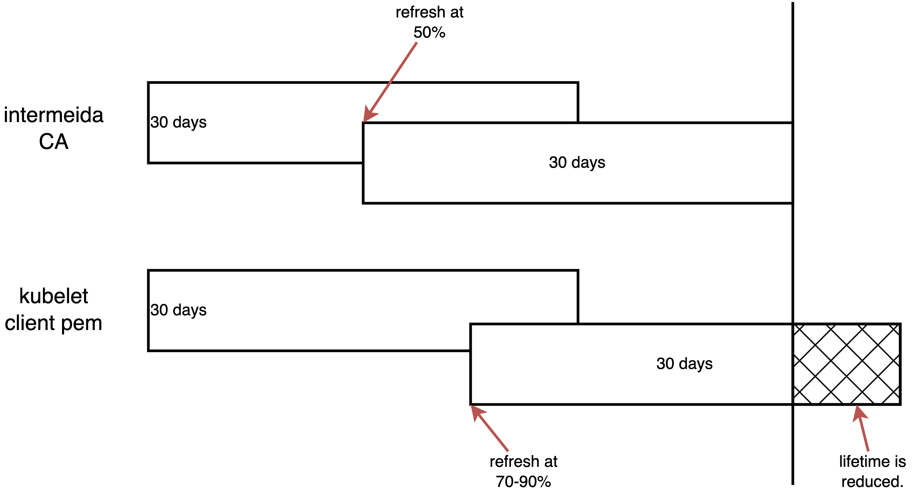

[!NOTE] Work in progress
with help of GenAI (gemini 2.5 pro)
Kubelet Client Certificate Rotation Analysis
Customers frequently inquire about the
kubelet-client-current.pem file, its rotation
process, and timing. This document analyzes these aspects.
Here is a schematic diagram of the conclusion of this article.

problem statement
For a new installed cluster, we can check the
kubelet-client-*.pem file and the expiration
time.
# select a master node
MASTER_NODE=$(oc get nodes -l node-role.kubernetes.io/master -o jsonpath='{.items[0].metadata.name}')
# list the pem files
oc debug node/${MASTER_NODE} -- chroot /host find /var/lib/kubelet/pki/ -name 'kubelet-client*.pem'
# /var/lib/kubelet/pki/kubelet-client-2025-07-08-22-39-29.pem
# /var/lib/kubelet/pki/kubelet-client-2025-07-10-07-31-58.pem
# /var/lib/kubelet/pki/kubelet-client-current.pem
# list all expiration date
oc debug node/${MASTER_NODE} -- chroot /host find /var/lib/kubelet/pki/ -name 'kubelet-client*.pem' -exec openssl x509 -in {} -noout -dates \;
# notBefore=Jul 8 22:34:29 2025 GMT
# notAfter=Jul 9 22:29:59 2025 GMT
# notBefore=Jul 10 07:26:58 2025 GMT
# notAfter=Aug 9 07:26:58 2025 GMT
# notBefore=Jul 10 07:26:58 2025 GMT
# notAfter=Aug 9 07:26:58 2025 GMTAs observed, the first certificate file has a 1-day expiration, while the subsequent one is valid for almost 30 days.
However, in clusters that have been running for an extended
period, the expiration dates of these certificate files can
appear inconsistent. Below is an example list of
kubelet-client*.pem expiration dates:
- 1 days
- 30 days
- 24 days
- 22 days
- 22 days
- 21 days
In the following sections, we will explain why these certificate expiration dates can vary.
chain of certification
The kubelet-client-current.pem file is part of a
certificate chain. We can use openssl to inspect
and verify this chain. The following commands demonstrate how to
identify and verify the certificates within the chain.
# get the root CA
oc get secret csr-signer-signer -n openshift-kube-controller-manager-operator -o jsonpath='{.data.tls\.crt}' | base64 --decode > root-for-csr-signer.crt
# get the intermediate CA
oc get secret csr-signer -n openshift-kube-controller-manager -o jsonpath='{.data.tls\.crt}' | base64 --decode > intermediate-ca.crt
# get the leaf CA (kubelet-client pem)
WORKER_NODE=$(oc get nodes -l node-role.kubernetes.io/worker -o jsonpath='{.items[0].metadata.name}')
oc debug node/${WORKER_NODE} -- chroot /host cat /var/lib/kubelet/pki/kubelet-client-current.pem > kubelet-client.pem
# verify the chain
openssl verify -CAfile root-for-csr-signer.crt -untrusted intermediate-ca.crt kubelet-client.pem
# kubelet-client.pem: OK
# print root-for-csr-signer.crt intermediate-ca.crt kubelet-client.pem's issuer, subject, date
echo "--- root-for-csr-signer.crt ---"
openssl x509 -in root-for-csr-signer.crt -noout -issuer -subject -dates
# issuer=CN = openshift-kube-controller-manager-operator_csr-signer-signer@1752132658
# subject=CN = openshift-kube-controller-manager-operator_csr-signer-signer@1752132658
# notBefore=Jul 10 07:30:57 2025 GMT
# notAfter=Sep 8 07:30:58 2025 GMT
echo "--- intermediate-ca.crt ---"
openssl x509 -in intermediate-ca.crt -noout -issuer -subject -dates
# issuer=CN = openshift-kube-controller-manager-operator_csr-signer-signer@1752132658
# subject=CN = kube-csr-signer_@1752132658
# notBefore=Jul 10 07:30:57 2025 GMT
# notAfter=Aug 9 07:30:58 2025 GMT
echo "--- kubelet-client.pem ---"
openssl x509 -in kubelet-client.pem -noout -issuer -subject -dates
# issuer=CN = kube-csr-signer_@1752132658
# subject=O = system:nodes, CN = system:node:control-plane-cluster-fp5zr-1-1
# notBefore=Jul 10 07:26:58 2025 GMT
# notAfter=Aug 9 07:26:58 2025 GMTrotation logic
For the root ca csr-signer-signer, here is the
core logic, source
code is here:
certrotation.RotatedSigningCASecret{
Namespace: operatorclient.OperatorNamespace,
// this is not a typo, this is the signer of the signer
Name: "csr-signer-signer",
AdditionalAnnotations: certrotation.AdditionalAnnotations{
JiraComponent: "kube-controller-manager",
},
Validity: 60 * rotationDay,
Refresh: 30 * rotationDay,
RefreshOnlyWhenExpired: refreshOnlyWhenExpired,
Informer: kubeInformersForNamespaces.InformersFor(operatorclient.OperatorNamespace).Core().V1().Secrets(),
Lister: kubeInformersForNamespaces.InformersFor(operatorclient.OperatorNamespace).Core().V1().Secrets().Lister(),
Client: secretsGetter,
EventRecorder: eventRecorder,
UseSecretUpdateOnly: true,
},We can see it has 60 days for validity and
30 days for refresh.
For the intermediate CA csr-signer, the core
logic is defined here:
certrotation.RotatedSelfSignedCertKeySecret{
Namespace: operatorclient.OperatorNamespace,
Name: "csr-signer",
AdditionalAnnotations: certrotation.AdditionalAnnotations{
JiraComponent: "kube-controller-manager",
},
Validity: 30 * rotationDay,
Refresh: 15 * rotationDay,
RefreshOnlyWhenExpired: refreshOnlyWhenExpired,
CertCreator: &certrotation.SignerRotation{
SignerName: "kube-csr-signer",
},We can see it has 30 days validity and
15 days refresh interval.
For the leaf certificate kubelet-client.pem, the
situation is more complex. The initial logic determines the
requested duration, as shown in the source code:
cluster-signing-duration:
- "720h"We can verify this parameter by running the following command:
MASTER_NODE=$(oc get nodes -l node-role.kubernetes.io/master -o jsonpath='{.items[0].metadata.name}')
oc debug node/${MASTER_NODE} -- chroot /host grep 'cluster-signing-duration' /etc/kubernetes/manifests/kube-controller-manager-pod.yaml
oc debug node/${MASTER_NODE} -- chroot /host cat /etc/kubernetes/manifests/kube-controller-manager-pod.yaml | jq . | grep cluster-signing-duration
# ............. --cluster-signing-duration=720h ...................As shown, when rotating a new
kubelet-client.pem, kube-controller-manager
attempts to allocate a 720 hour (30-day)
period.
Another key aspect is timing. The Kubelet’s internal logic
triggers certificate rotation when the current
kubelet-client.pem reaches 70-90% of
its 30-day lifetime. This rotation is randomized to
prevent all nodes from simultaneously burdening the Kube-API
server in large clusters. The relevant source code is located
here:
// nextRotationDeadline returns a value for the threshold at which the
// current certificate should be rotated, 80%+/-10% of the expiration of the
// certificate.
func (m *manager) nextRotationDeadline() time.Time {
// forceRotation is not protected by locks
if m.forceRotation {
m.forceRotation = false
return m.now()
}
m.certAccessLock.RLock()
defer m.certAccessLock.RUnlock()
if !m.certSatisfiesTemplateLocked() {
return m.now()
}
notAfter := m.cert.Leaf.NotAfter
totalDuration := float64(notAfter.Sub(m.cert.Leaf.NotBefore))
deadline := m.cert.Leaf.NotBefore.Add(jitteryDuration(totalDuration))
m.logf("%s: Certificate expiration is %v, rotation deadline is %v", m.name, notAfter, deadline)
return deadline
}
// jitteryDuration uses some jitter to set the rotation threshold so each node
// will rotate at approximately 70-90% of the total lifetime of the
// certificate. With jitter, if a number of nodes are added to a cluster at
// approximately the same time (such as cluster creation time), they won't all
// try to rotate certificates at the same time for the rest of the life of the
// cluster.
//
// This function is represented as a variable to allow replacement during testing.
var jitteryDuration = func(totalDuration float64) time.Duration {
return wait.Jitter(time.Duration(totalDuration), 0.2) - time.Duration(totalDuration*0.3)
}summary everything up
The intermediate CA has a 30-day lifetime and refreshes every
15 days. When Kubelet requests rotation of
kubelet-client.pem at 70-90% of its
30-day lifetime, the intermediate CA may not have sufficient
remaining validity to issue a new
kubelet-client.pem for the full 30-day period. In
such cases, it will issue a certificate valid only until the
intermediate CA’s own notAfter time.
kubelet server pem
kueblet-server.pem use the same logic as
kubelet-client.pem.
oc debug node/${MASTER_NODE} -- chroot /host find /var/lib/kubelet/pki/ -name 'kubelet-server*.pem'
# /var/lib/kubelet/pki/kubelet-server-2025-07-08-22-39-41.pem
# /var/lib/kubelet/pki/kubelet-server-2025-07-10-07-33-02.pem
# /var/lib/kubelet/pki/kubelet-server-current.pem
oc debug node/${MASTER_NODE} -- chroot /host find /var/lib/kubelet/pki/ -name 'kubelet-server*.pem' -exec openssl x509 -in {} -noout -dates \;
# notBefore=Jul 8 22:34:41 2025 GMT
# notAfter=Jul 9 22:29:59 2025 GMT
# notBefore=Jul 10 07:28:02 2025 GMT
# notAfter=Aug 9 07:28:02 2025 GMT
# notBefore=Jul 10 07:28:02 2025 GMT
# notAfter=Aug 9 07:28:02 2025 GMT
# get the root CA
oc get secret csr-signer-signer -n openshift-kube-controller-manager-operator -o jsonpath='{.data.tls\.crt}' | base64 --decode > root-for-csr-signer.crt
# get the intermediate CA
oc get secret csr-signer -n openshift-kube-controller-manager -o jsonpath='{.data.tls\.crt}' | base64 --decode > intermediate-ca.crt
# get the leaf CA (kubelet-client pem)
WORKER_NODE=$(oc get nodes -l node-role.kubernetes.io/worker -o jsonpath='{.items[0].metadata.name}')
oc debug node/${WORKER_NODE} -- chroot /host cat /var/lib/kubelet/pki/kubelet-server-current.pem > kubelet-server.pem
# verify the chain
openssl verify -CAfile root-for-csr-signer.crt -untrusted intermediate-ca.crt kubelet-server.pem
# kubelet-server.pem: OK
# print root-for-csr-signer.crt intermediate-ca.crt kubelet-client.pem's issuer, subject, date
echo "--- root-for-csr-signer.crt ---"
openssl x509 -in root-for-csr-signer.crt -noout -issuer -subject -dates
# issuer=CN = openshift-kube-controller-manager-operator_csr-signer-signer@1752132658
# subject=CN = openshift-kube-controller-manager-operator_csr-signer-signer@1752132658
# notBefore=Jul 10 07:30:57 2025 GMT
# notAfter=Sep 8 07:30:58 2025 GMT
echo "--- intermediate-ca.crt ---"
openssl x509 -in intermediate-ca.crt -noout -issuer -subject -dates
# issuer=CN = openshift-kube-controller-manager-operator_csr-signer-signer@1752132658
# subject=CN = kube-csr-signer_@1752132658
# notBefore=Jul 10 07:30:57 2025 GMT
# notAfter=Aug 9 07:30:58 2025 GMT
echo "--- kubelet-server.pem ---"
openssl x509 -in kubelet-server.pem -noout -issuer -subject -dates
# issuer=CN = kube-csr-signer_@1752132658
# subject=O = system:nodes, CN = system:node:control-plane-cluster-fp5zr-1-1
# notBefore=Jul 10 07:28:02 2025 GMT
# notAfter=Aug 9 07:28:02 2025 GMT